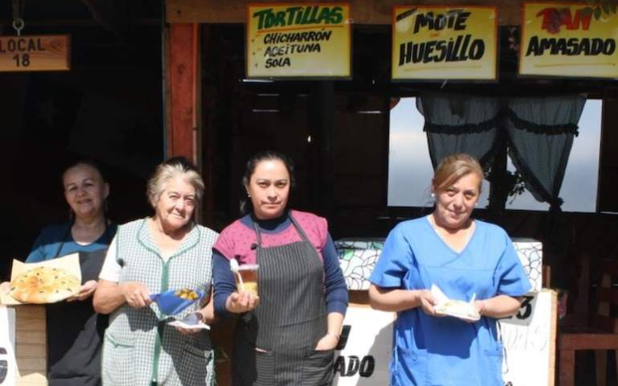

<!DOCTYPE html>
<html lang="es"></html>
    <head>
        <meta charset= "utf-8"/>
        <meta name = "Keywords" content="trabajo AIEP El Faro">
        <title>“El Faro”</title> 
        <link rel="stylesheet" href="estilos.css">           
    </head>
    <body>
        <header>
        </body> 

        <h1>Negocios</h1>
        <ol type="a">
            <li>
                <a href="index.html">Inicio</a>
            </li>   
            <li>
                <a href="Deportes.html">Deportes</a>
            </li>
            <li>
                <a href="Negocios.html">Negocios/Emprendimientos</a>
            </li>   
        </ol>
        
        
    </header>
    <section>
        <article>
            <table>

            
                <tr>
                    <td>
                        
                        <h3>negocios/emprendimientos</h3>
                        <h1>Ante el impacto de la crisis en el empleo femenino, Fundación Luksic lanza programa especial para emprendedoras</h1>
                        <h2>Las beneficiarias recibirán financiamiento por $2 millones para invertir en sus negocios más acompañamiento técnico y académico?</h2>
                        
                        <p>La crisis económica generada por la pandemia ha afectado a nuestro país en diferentes ámbitos y especialmente en lo que respecta al empleo: la tasa de desempleo consolidado de 2020 aumentó 3,5 puntos porcentuales respecto al año anterior, llegando al 10,7%, según informó el Instituto Nacional de Estadísticas (INE). En el segmento femenino, la desocupación alcanzó un 14,9% y se calcula que más de 800.000 mil mujeres salieron de la fuerza laboral durante el año pasado.
                            El estudio Empleo femenino y Covid-19: Diagnóstico y propuestas del Centro de Políticas Públicas UC, revela que la tasa de participación de las mujeres retrocedió una década, alcanzando un 47%, volviendo así a niveles de 2010 (46,8%). Estas cifras se deben a que, debido a las restricciones de movilidad, las mujeres tuvieron que aumentar su carga de labores domésticas.
                            Conscientes de este complejo escenario y de que el emprendimiento se convirtió en una opción real y necesaria para muchas mujeres, Fundación Luksic, en alianza con la Corporación Simón de Cirene y la Corporación Construyendo Mis Sueños, decidió lanzar su nuevo programa Despega Mujer, que tiene como objetivo potenciar a mujeres que ya cuentan con un excelente perfil emprendedor, para así fomentar su paso a un segmento superior de negocio, a través de un acompañamiento integral con enfoque de género.
                            </P>
                        <H4>“La pandemia implicó un retroceso de casi 10 años en la participación laboral femenina, una estadística muy preocupante. En Fundación Luksic estamos convencidos de que el emprendimiento es el motor económico del país y hemos visto de cerca la fuerza de las emprendedoras chilenas. Con este nuevo programa queremos entregar más y mejores herramientas a las mujeres, con un acompañamiento hecho especialmente para ellas, para que así puedan hacer despegar sus negocios y con eso, sus trayectorias de vida”, comentó Paola Luksic, presidenta de la Fundación Luksic.</H4>
                        <P>Despega Mujer es un programa que se enmarca en el área de Emprendimiento de la Fundación Luksic, la cual desarrolla diferentes iniciativas de apoyo para emprendedores, como el concurso Impulso Chileno que ha premiado en sus tres ediciones a un total de 220 emprendedores de todo el país, un 52% de estos ganadores son mujeres.</P>
                        <h4>Financiamiento</h4>
                        <p>El programa de emprendimiento femenino cuenta con la colaboración de Fondo Esperanza, entidad experta en emprendimiento, que seleccionará a un grupo de mujeres que hayan participado de sus programas para que postulen a la iniciativa de Fundación Luksic. Se invitará a emprendedoras de las comunas de Antofagasta, Puerto Montt, Renca, Independencia y Quinta Normal, y entre ellas se seleccionará a 20 ganadoras para que participen del primer ciclo de este programa.</p>
                        <br>
                        
                    </td> 
                   
                </tr>
            </table>
        </article>
        <article>
        
            <table>

            
                <tr>
                    <td>
                        
                        <h3>negocios/emprendimientos</h3>
                        <h1>"Tiltil es una mina de oro": la historia de una de las fundadoras del famoso "pueblito" de la comuna</h1>
                        
                        
                        <p>Aunque no es tiltilana de origen, Verónica Ñancupil lleva a Tiltil en el corazón, pues llegó a esta comuna a los 9 años. Hoy, a sus 40, se siente una más de la comunidad. En sus inicios como emprendedora, trabajó al borde de la Cuesta La Dormida, vendiendo aceitunas y tunas, productos típicos de Tiltil, un lugar que debió abandonar con la construcción del camino a Caleu.
                            Luego, junto a otras emprendedoras arrendó el terreno que daría vida al famoso "Pueblito de Tiltil". De eso han pasado 18 años y los precarios puestos iniciales, que solo contaban con una lona, se han convertido en 16 locales donde se ofrecen productos de primera calidad, tanto a los vecinos de la comuna como a quienes transitan por ahí cuando se dirigen a la Región de Valparaíso.
                            </P>
                        <H4>"El pueblito no solo ha servido para dar a conocer a la comuna, que antes solo se conocía por el asesinato de Manuel Rodríguez, sino que también da empleo a mucha gente. Gracias a mi trabajo ahí, por ejemplo, eduqué a mis dos hijas mayores", explica. Hoy tiene además un hijo de 9 meses.</H4>
                        <P>Aunque comenzó vendiendo empanadas, aceitunas y aceite, hoy Verónica se preocupa de que su local "Ñuke Mapu" cuente con una gran variedad de productos locales, elaborados por ella o por otros emprendedores de la zona, porque su objetivo es que "la gente que entra siempre encuentre lo que quiere".
                            El año pasado, la emprendedora ingresó a la Cocina Comunitaria Til Til, para envasar aceite de oliva, lugar donde conoció a otros emprendedores que hoy la proveen de productos para su local, todo con la debida resolución sanitaria que otorga el espacio colaborativo que instaló Pro Til Til en la comuna.
                            "Empecé a comprar a productos a otros emprendedores para venderlos y así, tener más variedad para el público, porque a la gente le gusta lo casero y muchos piden productos de nuestra localidad. Así, formamos un círculo comercial, en el cual todos ganamos", afirma Verónica Ñancupil.
                            Así, en su local es posible encontrar miel 100% pura de la zona, aceite que ella junto a su marido prensan en frío, mermelada de tuna, aceitunas rellenas y sin relleno, manjar y mantequilla casera. Aquí las estrellas son el manjar de leche de cabra y el jarabe de tuna, productos que, según dice, "se venden mucho".
                            </P>
                        <h4>Tecnología y conocimiento</h4>
                        <p>"Tratamos de darle prioridad a los productos de nuestra comuna, porque pensamos que Til Til tiene mucho potencial económico. Creemos que Til Til es una mina de oro", asevera.
                            En esta línea, apunta a la necesidad de incorporar conocimientos y tecnología para agregar valor a los productos de la zona. Uno de sus sueños es aprovechar los olivos propios de la zona para empezar a producir aceitunas rellenas o lograr la receta perfecta para comercializar tunas en conserva, tal como se hace con las papayas o los duraznos.
                            Para Verónica, Pro Til Til -corporación gestora de la Cocina Comunitaria Til Til, donde elabora sus productos- juega un rol relevante en la expansión de los negocios, pues no solo le ha permitido conocer a otros emprendedores con los cuales mancomunar esfuerzos, sino que también le ha entregado conocimientos y herramientas para potenciar sus productos. "Nos ha ayudado en temas de comercio, de administración, pero también, por ejemplo- en el diseño de las nuevas etiquetas que tendrán mis productos", afirma.
                            </p>
                        <br>
                        
                    </td> 
                   
                </tr>
            </table>
        </article>
    <article>
        
        
            <table>

            
                <tr>
                    <td>
                        
                        <h3>negocios/emprendimientos</h3>
                        <h1>Ante el impacto de la crisis en el empleo femenino, Fundación Luksic lanza programa especial para emprendedoras</h1>
                        <h2>Las beneficiarias recibirán financiamiento por $2 millones para invertir en sus negocios más acompañamiento técnico y académico?</h2>
                        
                        <p>La crisis económica generada por la pandemia ha afectado a nuestro país en diferentes ámbitos y especialmente en lo que respecta al empleo: la tasa de desempleo consolidado de 2020 aumentó 3,5 puntos porcentuales respecto al año anterior, llegando al 10,7%, según informó el Instituto Nacional de Estadísticas (INE). En el segmento femenino, la desocupación alcanzó un 14,9% y se calcula que más de 800.000 mil mujeres salieron de la fuerza laboral durante el año pasado.
                            El estudio Empleo femenino y Covid-19: Diagnóstico y propuestas del Centro de Políticas Públicas UC, revela que la tasa de participación de las mujeres retrocedió una década, alcanzando un 47%, volviendo así a niveles de 2010 (46,8%). Estas cifras se deben a que, debido a las restricciones de movilidad, las mujeres tuvieron que aumentar su carga de labores domésticas.
                            Conscientes de este complejo escenario y de que el emprendimiento se convirtió en una opción real y necesaria para muchas mujeres, Fundación Luksic, en alianza con la Corporación Simón de Cirene y la Corporación Construyendo Mis Sueños, decidió lanzar su nuevo programa Despega Mujer, que tiene como objetivo potenciar a mujeres que ya cuentan con un excelente perfil emprendedor, para así fomentar su paso a un segmento superior de negocio, a través de un acompañamiento integral con enfoque de género.
                            </P>
                        <H4>“La pandemia implicó un retroceso de casi 10 años en la participación laboral femenina, una estadística muy preocupante. En Fundación Luksic estamos convencidos de que el emprendimiento es el motor económico del país y hemos visto de cerca la fuerza de las emprendedoras chilenas. Con este nuevo programa queremos entregar más y mejores herramientas a las mujeres, con un acompañamiento hecho especialmente para ellas, para que así puedan hacer despegar sus negocios y con eso, sus trayectorias de vida”, comentó Paola Luksic, presidenta de la Fundación Luksic.</H4>
                        <P>Despega Mujer es un programa que se enmarca en el área de Emprendimiento de la Fundación Luksic, la cual desarrolla diferentes iniciativas de apoyo para emprendedores, como el concurso Impulso Chileno que ha premiado en sus tres ediciones a un total de 220 emprendedores de todo el país, un 52% de estos ganadores son mujeres.</P>
                        <h4>Financiamiento</h4>
                        <p>El programa de emprendimiento femenino cuenta con la colaboración de Fondo Esperanza, entidad experta en emprendimiento, que seleccionará a un grupo de mujeres que hayan participado de sus programas para que postulen a la iniciativa de Fundación Luksic. Se invitará a emprendedoras de las comunas de Antofagasta, Puerto Montt, Renca, Independencia y Quinta Normal, y entre ellas se seleccionará a 20 ganadoras para que participen del primer ciclo de este programa.</p>
                        <br>
                        
                    </td> 
                   
                </tr>
            </table>
        </article>
        
    </body>
</html>